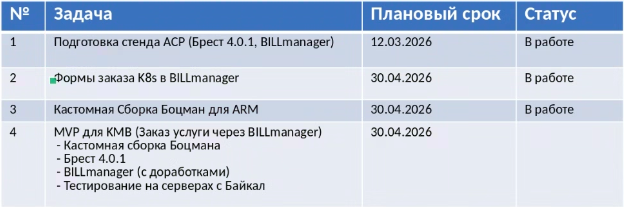

Содержание
Открытые вопросы
Подготовка ко встрече
Оставшиеся задачи
not done
tags include #Шадрин_Александр
sort by due
group by due- IaaS Orchestrator - уточнить статус БТ, что решили по подходу (минимальные требования vs полноценная проработка)
- BillManager - статус по квотам (AIC-536) и AICBUG-124; как продвигается вынос провиженинга
- Boatsman / K8s - когда презентация видения внутри команды; статус интеграции с Brest и BillManager
- API Gateway (APIM/Gravitee) - назначена ли встреча по разъяснению; что с планами на замену
- Архитектурный пре-чекин - подойти к Андрею Крюкову по открытым архитектурным вопросам перед внешними встречами
Cинки
21-07-2026 - 1-2-1
Протокол:
- Boatsman + BillManager - плагин пишет Boatsman (Фёдор), BillManager только ревьювит. Контекст: завязка на пользователя -> организация -> namespace/VDC. Плавающий IP - BillManager не хочет делать, будут решать через Boatsman IPAM
- BillManager стратегия - Билл ничего не хочет делать сам, Boatsman пишет плагин за свой счёт (канал продаж). Те же проблемы, что и у нас с Биллом
- IaaS Orchestrator - требования: по образам подготовил, по ВМ с Михаилом проговорил, сети - добивает. На этой неделе отдаёт Олегу
- Взаимодействие с Ольгой - хорошее: фактуру готовит сам, Ольга детализирует. Пример с кубером - Ольга сама разложила, создала задачи
- APIM/Gravitee - Данил Борчевкин переживает, что его ресурсы потрачены зря. Александр: его вклад не зря - без этого не было бы базы для IaaS Orchestrator, Gravitee используется только как gateway
- Встреча по ЛК админу - перенесена на четверг + контекст тенантов. ПСБ не нужен биллинг - возможно выделят больше ресурсов
Решения:
- BillManager не делает - Boatsman пишет плагин сами. Наш IaaS Orchestrator будет своим
- Микрофичи/БТ - Александр готовит фактуру, Ольга детализирует - работает
Задачи:
- #121 шадрин_александр Добить требования по сетям (IaaS Orchestrator), отдать Олегу
- #121 склабовский_сергей Перенести встречу по ЛК админу + тенанты на четверг
AAR:
- Удачно: Boatsman пишет плагин - есть решение. Ольга помогает с детализацией
- Неудачно: BillManager ничего не делает - Boatsman тратит свои ресурсы
- Иначе: IaaS Orchestrator делаем свой, плагин Boatsman - временное решение
30.06.26 - 1-2-1
- Сформируй плиз список открытых вопросов по оркестратору - что на текущий момент не понятно/какие есть открытие вопросы по взаимодействиую между компонентами ✅ 2026-07-17
- Поставь плиз встречу по презентации видения Оркестратора и K8SaaS внутри команды платформы не позднее середины августа. Если есть вопросы - скидывает)
- Посмотри плиз по задаче с синка с Биллом по кваотам - https://jira.astralinux.ru/browse/AIC-536. И
- вот эту вот https://jira.astralinux.ru/browse/AICBUG-124 тоже плиз глянь. Кажется они связаны
07-07-2026 - 1-2-1 (разбор встречи с BillManager)
Протокол:
- Встреча с BillManager - разобрали ошибки: не было контекста в начале, не было готовой продуктовой позиции, прозвучало оценочное суждение про Boatsman
- Контекст на встречах - всегда начинать с 2-3 фраз «зачем пришли, что хотим на выходе»
- Позиция по VDC/ВМкам - ВМки Kubernetes скрыты от клиента; VDC текущий, отделён от VDC для обычных ВМ
- Тарификация k8s - проработать единую наценку вместо мастер/воркер
- MVP Kubernetes - воркеры (кол-во + ресурсы) нельзя убрать; мастера, версия, сеть - можно
- Роль ТП - внешние: «что/почему»; внутренние: + «как»
- Архитектор Андрей - подходить до внешних встреч с архитектурными вопросами
- Формат видения - не роадмап, а стейджи (1-я итерация жёстко, 2-я обсуждаема)
Решения:
- Контекст в начале каждой внешней встречи
- VDC k8s - текущий клиента, отделён от VDC IaaS
- Оценочные суждения - не выносить наружу
- Тарификация - единая наценка (согласовать с бизнесом)
Задачи:
- 1-2-1 склабовский_сергей Скинуть 2 задачи по BillManager Александру 📅 2026-07-07 ✅ 2026-07-13
- 1-2-1 шадрин_александр Посмотреть «Управление техническими кодами из портала» 📅 2026-07-07
- 1-2-1 шадрин_александр Разобрать 2 задачи BillManager (квоты + ресурсы Brest) 📅 2026-07-11
- 1-2-1 шадрин_александр Поставить встречу по презентации (артком) 📅 2026-07-08
- 1-2-1 шадрин_александр Сообщить - есть ли что выносить на артком 08.07 📅 2026-07-08
AAR:
-
Удачно: зафиксированы позиции по VDC/ВМкам/тарификации, разграничена роль ТП, process fix по контексту
-
Неудачно: не было готовой позиции на встречу с BillManager, оценочное суждение про Boatsman, не подошли к Андрею заранее
-
Иначе: на внешнюю встречу - с готовой позицией; шаблон контекста; пре-чекин с архитектором
-
Метрики: 5 решений, 5 задач
-
Текущий статус развитие APIM
- Управлением ВМ, прикрепляемых дисков, управления сети (RESTовая оболочка на БРЕСТом - технически можем прикрепить) - закрываем на текущий момент на 80% взаимодействие с Брестом
- Сырость заключается:
- Тенанты - мы идем в Брест и смотрим идентификаторы VDC (это и есть tenant). Доделаем с учетом реализации
- Нет списка образов на ВМ (эту API не сделали)
-
Дальнейшие шаги по развитию
- Описываем оркестратор IaaS, который закрывает 100% взаимодействие с Брестом (в т.ч. управление SDN)
- Далее описываем требования к оркестратору PaaS (который будет управлять Боцманом)
- Будет уход от APIM (он тут не нужен) например к Gravitee
Подготовка к ЦИПРу
BillManager (работает под x86) и Bootsman (не работает)

Managed Kubernetes
Базовые свойства
- Управляемый control plane: провайдер берёт на себя мастер-узлы, их обновления, отказоустойчивость и доступность.
- Worker nodes under customer control: рабочие ноды обычно масштабируются и настраиваются отдельно, но в рамках сервиса.
- Автоматическое обновление версий: Kubernetes, add-ons и иногда системные компоненты обновляются контролируемо и совместимо.
- Автоскейлинг: обычно нужны HPA/VPA/cluster autoscaler или их аналог, чтобы сервис реагировал на нагрузку.
- HA / отказоустойчивость: поддержка zonal/regional control plane, multi-AZ и сценариев с восстановлением.
Инфраструктурные свойства
- Интеграция с сетью: VPC/VNet, private networking, ingress/egress, load balancers, security groups / firewall rules.
- Хранилище: поддержка persistent volumes, CSI, классов storage и snapshot/backup-сценариев.
- Адресация и DNS: понятная интеграция с внутренними и внешними доменами и сервис-дискавери.
- Наблюдаемость: metrics, logs, traces, audit events, integration с мониторингом провайдера.
- Приватный доступ: возможность private API endpoint и ограничение доступа к control plane.
Security и governance
- IAM / RBAC интеграция: доступ к кластеру через identity провайдера и роли.
- Namespace / multi-tenancy isolation: разделение команд и workloads внутри одного кластера.
- Policy enforcement: admission control, network policies, pod security, image policies.
- Secrets management: интеграция с managed secret store или KMS.
- Auditability: кто создал кластер, кто менял конфигурацию, кто деплоил workloads.
Эксплуатационные свойства
- Backup/restore: кластера, etcd, namespaces или приложений, если это входит в сервис.
- Drift control: минимизация ручных изменений, которые потом ломают стандартный lifecycle.
- SLA и support: понятные обязательства по доступности и реакции поддержки.
- Cost visibility: прозрачный биллинг по кластерам, нодам, часам, storage и network.
- Terraform/API support: возможность управлять инфраструктурой как кодом.
Что обычно важно бизнесу
Для клиента managed Kubernetes ценен, если он получает:
- меньше ручной эксплуатации;
- предсказуемые обновления;
- безопасный и изолированный runtime;
- понятный биллинг;
- быстрый time-to-production.
Если совсем коротко, managed Kubernetes должен закрывать control plane, lifecycle, security, networking, observability и billing, чтобы команда занималась приложениями, а не администрированием кластера.
Разбор общения с BillManager на 1-2-1
Формат: ~75 минут. Разговор про подход, не про содержание. Настроение: совместный разбор кейса, а не судебное заседание. Итог, ради которого встречаемся: Александр уходит с пониманием, как та же презентация могла бы быть построена, и с двумя конкретными вещами - одна, которую он попробует применить на ближайшей встрече со смежниками, и одна по переработке UC-IAAS-002.
Как открыть (5 минут)
Открой с признания сильных сторон - это не подхалимаж, это правда. Александр реально разобрался в устройстве Боцмана, Бреста и BillManager, показал живое демо, слышал вопросы без обороны, согласился зайти повторно через неделю. Это база, на которой мы стоим.
Затем сформулируй цель встречи прямо: «Хочу разобрать не решение, а подачу. Хочу, чтобы в следующий раз результат встречи был не „ушли думать“, а „договорились по модели и получили оценку“».
Дальше - тон разговора. Спроси его первым: «Как ты сам оцениваешь ту встречу? Что получилось, что бы сам поменял?» Это критично. Если он сам придёт к части выводов - они будут его выводами, не твоими. Не спеши со своими наблюдениями до его самооценки.
Пять тем разговора
Иди в этом порядке. Каждую тему стройте по паттерну: факт -> вопрос -> его версия -> твой разбор -> правильная модель. Не читай ему лекцию - задавай вопросы. Твоя задача - чтобы он сам поймал закономерность.
Тема 1. Открытие встречи
Факт из транскрипта: первые 50 секунд ушли на «сейчас пошарим… сначала демку покажу». Мне пришлось встрять на 00:50 и попросить его рассказать контекст.
Вопрос ему: «Юля и Андрей на этой встрече - что они знали про услугу k8s до неё? Что им нужно было услышать в первые две минуты, чтобы дальше 30 минут разговора стали для них осмысленными?»
Что он должен поймать: для смежной команды, у которой контекста нет, нужно сначала дать рамку - что за услуга, кто пользователь, что мы хотим от этой встречи. Демо - потом.
Как правильно было бы: «Мы делаем услугу Managed Kubernetes для клиентов BillManager. Пользователь - DevOps корпоративного заказчика. Пришёл в BillManager, выбрал тариф, получил кластер и kubeconfig. От вас сегодня нужно два ответа: (1) согласовать продуктовую модель, (2) оценка сложности MVP. Демо и детали пойдут дальше.» Ключевая фраза - «от вас сегодня нужно». Она заранее фокусирует встречу на результате.
Тема 2. Продуктовая модель (главный урок)
Факт из транскрипта: на 24:23 Андрей спросил, как k8s соотносится с VDC - двойной ли учёт в биллинге, где живут ВМки, что видит клиент. Александр ответил: «я, честно говоря, пока не могу предложить, какой лучший вариант».
Вопрос ему: «Этот вопрос - он про технику или про продукт?» Дай ему подумать.
Если ответит «про технику» - мягко возрази: «Про технику - это где именно вписать логику. Про продукт - это что видит клиент, за что платит, есть ли двойной учёт, как называется услуга в его каталоге. Это разные слои».
Продолжи: «Если бы ты сел прорабатывать этот вопрос ДО встречи, какие альтернативы у тебя были бы на слайде?»
Три варианта, которые он должен был принести:
- A. Отдельный VDC под каждый k8s. Плюсы: чистая модель, отдельная тарификация, нет двойного учёта. Минусы: время заказа растёт, UX хуже.
- B. Разворачиваем в существующем VDC клиента, ВМки скрыты из его интерфейса. Плюсы: быстрый заказ. Минусы: есть риск двойного учёта, связь «странная» - как и указал Андрей.
- C. Встраиваем в VDC-обработчик самого Бреста. Плюсы: архитектурно чисто. Минусы: требует переработки Бреста, задевает чужую команду.
Правильная позиция ТПМ: «Я предлагаю вариант B с этими компромиссами. Готов услышать альтернативы, если они у вас есть». Это позиция, которую можно оспорить - и это ХОРОШО. Оспаривать нечего - только когда ТПМ не принёс позицию.
Ключевая мысль: ТПМ не обязан знать «правильный ответ». ТПМ обязан принести подготовленный выбор. Разница огромная.
Тема 3. Проактивная нарезка скоупа
Факт из транскрипта: на 17:39 Юля спрашивает «Все параметры хотите в первую итерацию?» - и только с этого момента (уже 18 минут во встречу) Александр начинает уступать: «можно скипнуть», «готов подвинуться», «не обязательно». Всё это - правильные вещи. Но они появились как уступки на давление.
Вопрос ему: «В чём разница между „готов подвинуться, если сложно“ и „вот наш MVP, вот следующая итерация, вот от чего отказываемся сейчас“?»
Что он должен поймать: первое - реактивная позиция, которую видят как слабость. Второе - продуктовая позиция, которая читается как зрелость и уважение к времени смежной команды. Смежники любят вторую позицию: она сокращает встречу и делает её результативной.
Как правильно было бы: отдельный слайд с явной таблицей - MVP | Итерация 2 | Итерация 3 | Не делаем. Заранее, а не по запросу.
(Здесь можешь напомнить: это ровно тот же принцип, что мы обсуждали на прошлой установочной встрече и что показывали на слайде про XaaS.)
Тема 4. Границы и уважение к смежным командам
Факт из транскрипта: на 20:51 Александр публично назвал плагин Боцмана «кустарно сделанным». Это команда, с которой мы работаем и от которой мы зависим.
Вопрос ему: «Кто был в комнате, когда ты это сказал? Дошло бы это до команды Боцмана?»
Что он должен поймать: оценка чужой работы в межкомандной встрече - риск отношений, а пользы ноль. Ту же мысль можно донести без оценок: «Текущий плагин закрывает базовый сценарий, но нашему кейсу нужны доработки - вот какие. Готов принести детальный список на обсуждение команде Боцмана».
Это не про политкорректность. Это про то, что от отношений с командой Боцмана зависит скорость движения его же продукта.
Тема 5. Уровни абстракции требований - UC vs sequence/API/FR
Факт: Александр оформил UC-IAAS-002 «Обработать и перенаправить запрос на создание инстанса ВМ» в той же нотации use case, что и пользовательский UC-SCP-002 «Создать виртуальную машину на Портале самообслуживания». Первый - про пользователя, второй - про технический flow между IAAS, IAM и VIR.
Вопрос ему: «Кто актор в UC-IAAS-002?» Ответ он даст сам: IAAS. Задай следующий: «Может ли система быть актором собственного use case?» Здесь он должен почувствовать смысловое противоречие.
Признаки, по которым это НЕ use case:
- Актор - система, а не человек. Актор use case - тот, кто инициирует взаимодействие и получает ценность. Система не может быть актором собственного процесса.
- Триггер - «получен HTTP-запрос», а не намерение пользователя.
- Шаги описывают межсистемные вызовы с HTTP-кодами, XML-форматом и конкретными эндпоинтами (
one.template.instantiate) - это уровень реализации, не сценария. - Расширения - про технические сбои (401, 400, 5xx), а не про пользовательские ошибки.
Что это должно быть на самом деле: пакет из трёх артефактов, связанный обратной трассировкой с UC-SCP-002 и с другими UC, которые дёрнут тот же API:
- Sequence diagram для «шагов 1–12 базового сценария»
- API-спецификация для endpoint
POST /vm(часть API-IAAS-001 уже есть) - Набор FR к оркестратору (FR-IAAS-001…006 - уже описаны в документе)
Почему это важно, а не педантизм: один пользовательский UC может реализоваться через несколько API-цепочек, и один API-endpoint может обслуживать несколько UC. Если технический flow оформлен как UC - эта связь «многие ко многим» ломается. Каждое изменение UI тянет ревизию технического «UC»; трассировка требований разваливается. Это ровно тот паттерн бывшего архитектора: техническая последовательность оформлена в продуктовую нотацию, потому что нотация UC привычна.
Как правильно было бы:
| Артефакт | Уровень | Актор | Пример |
|---|---|---|---|
| Use Case | Пользовательский | Человек | UC-SCP-002 «Создать ВМ на Портале» |
| Sequence diagram | Межсистемный | Подсистемы | Взаимодействие SCP_CP ↔ IAAS ↔ VIR при создании ВМ |
| API spec | Контрактный | Endpoint | POST /vm - schema, response codes, errors |
| FR | Функциональный | Компонент | «Оркестратор валидирует токен через IAM introspect» |
Каждый уровень отвечает на свой вопрос: UC - «кто и зачем», sequence - «как подсистемы разговаривают», API - «какой контракт», FR - «что делает компонент».
Что закрепить в разговоре: UC-IAAS-002 не нужно «выкидывать» - там правильное содержание, но нужно переоформить. Договоритесь с Александром: он до конца недели переработает артефакт в правильную структуру и покажет тебе. Это упражнение полезнее любой лекции про уровни абстракции.
Референс (10 минут)
После разбора четырёх тем - покажи презентацию-референс (ту, что я сделал: Managed_K8s_reference.pptx). Не как «вот как надо было», а как «вот пример структуры, в которую тот же материал ложится по-другому».
Пройди по слайдам за 5–7 минут. Обрати внимание на три момента:
- Слайд 2 «Что от вас нужно сегодня» - заранее заявленная цель встречи.
- Слайд 6 «Открытый вопрос про модель» - три варианта с плюсами и минусами вместо неответа.
- Слайд 7 «Скоуп по итерациям» - как выглядит проактивная нарезка.
Спроси: «Что из этого ты попробуешь применить на следующей встрече со смежниками?» Пусть выберет одну вещь. Не пять. Одна конкретная вещь, которую он реально попробует.
Закрытие (5 минут)
Зафиксируй три вещи:
- Одну конкретную практику по подаче межкомандных встреч, которую он берёт на следующую встречу.
- Договорённость по UC-IAAS-002: до конца недели переработать в связку sequence + API + FR, показать тебе.
- Твоё предложение: до следующей встречи со смежниками - 30 минут вдвоём, где он покажет тебе черновик подачи. Не разбор, не согласование, а совместная проверка «читается ли это со стороны».
Общий тон: это не разовый разговор, а начало практики. Дальше - по мере необходимости, но обратная связь по подаче теперь становится нашей общей темой.
Чего НЕ делать
- Не проходить транскрипт цитатами. Ты уже разобрался - переваренные наблюдения работают лучше, чем оригинальный текст под нос.
- Не сравнивать с другими ТПМ («вот X делает так»). Только про его кейс.
- Не давать больше одной конкретной практики к применению. Больше - просто размывается.
- Не заканчивать общими словами вроде «в общем, работай над подачей». Заканчивай конкретным «на следующей встрече с BillManager попробуй вот это, и покажешь мне черновик за день до».
Backlinks
TABLE without id
file.outlinks AS "OUTGOING",
file.inlinks AS "BACKLINKS"
WHERE file.name = this.file.namephone: department: position_:
Links
Description
- Текущий статус развитие APIM
- Управлением ВМ, прикепляемых дисков, управления сети (RESTовая оболочка на БРЕСТом - технически можем прикрепить) - закрываем на текущий момент на 80% взаимодействие с Брестом
- Сырость заключатется
- Тенанты - мы идем в Брест и смотрим индитефикторв VDC (это и есть tenant). Доделаем с учетом реализации
- Нет списка образов на ВМ (эту API не сделали).
- Дальнейшие шаги по развитию
- Описываем оркестратор IaaS, который закрывает 100% взаимодействие с Брестом (в т.ч. управление SDN)
- Далее описываем требования к оркестратор PaaS (который будет управлять Боцманом)
- Будет уход от APIM (он тут не нужен) например к Gravitee
Подготовка к ЦИПРу
BillManager (работает под x86) и Bootsman (не работает)- они рабjnf.n
Unmanaged Kubernetes
Managed Kubernetes
Базовые свойства
- Управляемый control plane: провайдер берёт на себя мастер-узлы, их обновления, отказоустойчивость и доступность.
- Worker nodes under customer control: рабочие ноды обычно масштабируются и настраиваются отдельно, но в рамках сервиса.
- Автоматическое обновление версий: Kubernetes, add-ons и иногда системные компоненты обновляются контролируемо и совместимо.
- Автоскейлинг: обычно нужны HPA/VPA/cluster autoscaler или их аналог, чтобы сервис реагировал на нагрузку.
- HA / отказоустойчивость: поддержка zonal/regional control plane, multi-AZ и сценариев с восстановлением.
Инфраструктурные свойства
- Интеграция с сетью: VPC/VNet, private networking, ingress/egress, load balancers, security groups / firewall rules.
- Хранилище: поддержка persistent volumes, CSI, классов storage и snapshot/backup-сценариев.
- Адресация и DNS: понятная интеграция с внутренними и внешними доменами и сервис-дискавери.
- Наблюдаемость: metrics, logs, traces, audit events, integration с мониторингом провайдера.
- Приватный доступ: возможность private API endpoint и ограничение доступа к control plane.
Security и governance
- IAM / RBAC интеграция: доступ к кластеру через identity провайдера и роли.
- Namespace / multi-tenancy isolation: разделение команд и workloads внутри одного кластера.
- Policy enforcement: admission control, network policies, pod security, image policies.
- Secrets management: интеграция с managed secret store или KMS.
- Auditability: кто создал кластер, кто менял конфигурацию, кто деплоил workloads.
Эксплуатационные свойства
- Backup/restore: кластера, etcd, namespaces или приложений, если это входит в сервис.
- Drift control: минимизация ручных изменений, которые потом ломают стандартный lifecycle.
- SLA и support: понятные обязательства по доступности и реакции поддержки.
- Cost visibility: прозрачный биллинг по кластерам, нодам, часам, storage и network.
- Terraform/API support: возможность управлять инфраструктурой как кодом.
Что обычно важно бизнесу
Для клиента managed Kubernetes ценен, если он получает:
- меньше ручной эксплуатации;
- предсказуемые обновления;
- безопасный и изолированный runtime;
- понятный биллинг;
- быстрый time-to-production.
Если совсем коротко, managed Kubernetes должен закрывать control plane, lifecycle, security, networking, observability и billing, чтобы команда занималась приложениями, а не администрированием кластера.
Tasks
not done
sort by due TABLE without id
file.outlinks AS "OUTGOING",
file.inlinks AS "BACKLINKS"
WHERE file.name = this.file.name